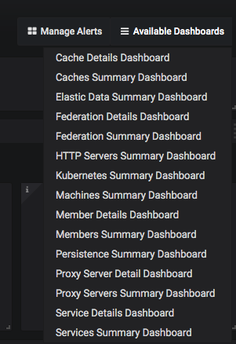

Monitor Coherence Services via Grafana Dashboards
The Coherence Operator (the "operator") includes the Prometheus Operator as an optional subchart named, prometheusoperator.
To configure the Prometheus Operator and monitor Coherence services via Grafana dashboards, follow the instructions:
Note: Use of Prometheus and Grafana is available only when using the operator with Coherence 12.2.1.4.
This use-case is covered in the samples. Refer to the samples documentation.
Install the Charts
When you install the coherence-operator chart, you must specify the following
additional set value for helm to install the subchart, prometheusoperator.
--set prometheusoperator.enabled=true
All coherence charts installed in coherence-operator targetNamespaces are monitored by
Prometheus. The servicemonitor, <releasename>-coherence-service-monitor
configures Prometheus to scrape all components of coherence-service.
Port Forward Grafana
After you install the charts, use the following script to port forward the Grafana pod:
#!/bin/bash
trap "exit" INT
while :
do
kubectl port-forward $(kubectl get pods --selector=app=grafana -n namespace --output=jsonpath="{.items..metadata.name}") -n namespace 3000:3000
done
Note: Since port forwarding is sometimes unreliable, it should be used only as a development tool, and not in a production environment.
Log in to Grafana
In a browser, go to the URL, http://127.0.0.1:3000/d/coh-main/coherence-dashboard-main to access the main Coherence dashboard.
On the Grafana login page, enter the login id, admin and the password, prom-operator.
Click Home on the upper left corner of the page to get a list of preconfigured dashboards.
Click Coherence Dashboard Main.
Default Dashboards
There are a number of dashboards created via the import process.
-
Coherence Dashboard main for inspecting coherence cluster(s)
-
Coherence Cluster Members Summary and Details
-
Coherence Cluster Members Machines Summary
-
Coherence Cache Summary and Details
-
Coherence Services Summary and Details
-
Coherence Proxy Servers Summary and Details
-
Coherence Elastic Data Summary
-
Coherence Cache Persistence Summary
-
Coherence Http Servers Summary
Navigate the Dashboards
The Grafana dashboards created to monitor Coherence Clusters have some common UI elements and navigation patterns:
- Variables and Annotations
At the top left of the dashboard, variables that are changeable and affect the queries in the dashboards are displayed. Similarly, annotations, that indicate events on the dashboard, can be enabled or disabled.

ClusterName is a common variable that can be used to choose the cluster to display information for.
Show Cluster Size Changed is an annotation that shows the time over which the cluster size has changed. All
annotations appear as a red vertical line as shown below:

- Access other dashboards
On the right of the page, you can click Available Dashboards to view all available dashboards.

Configure your Prometheus Operator to Scrape Coherence pods
This section assumes that you do not want the coherence-operator's helm subchart,prometheusoperator installed.
It provides information on how to configure what is automated by using coherence-operator helm chart parameter
prometheusoperator.enabled=true.
Refer to the Prometheus Operator documentation to understand how to configure and deploy a service monitor for your own Prometheus Operator installation. This section only describes the service monitor configuration as it relates to the Coherence helm chart.
coherence-service-monitor.yaml fragment:
...
spec:
selector:
matchLabels:
component: "coherence-service"
...
endpoints:
- port: 9612
If the Coherence helm chart parameter service.metricsHttpPort is set when installing the Coherence helm chart,
replace 9612 above with the new value.
If the Coherence helm chart parameter store.metrics.ssl.enabled is set to true, then add endpoints.scheme with the value of https
to the coherence-service-monitor.yaml fragment.
Troubleshoot
Helm install of coherence-operator fails, creating a custom resource definition (CRD)
The helm installation for coherence-operator fails, creating a custom resource definition (CRD). When you see this error, follow the recommendation in Prometheus Operator: helm fails to create CRDs
to manually install the Prometheus Operator CRDs, and then install the coherence-operator chart with these additional set values.
--set prometheusoperator.enabled=true --set prometheusoperator.prometheusOperator.createCustomResource=false
No datasource found
When you see this error, manually create a datasource by clicking Create your first data source on the Grafana Home page, and fill in the following fields:
Name: Prometheus
HTTP URL: http://prometheus-operated.<namespace>.svc.cluster.local:9090
Ensure that this datasource is set as the default.
Click Save & Test.